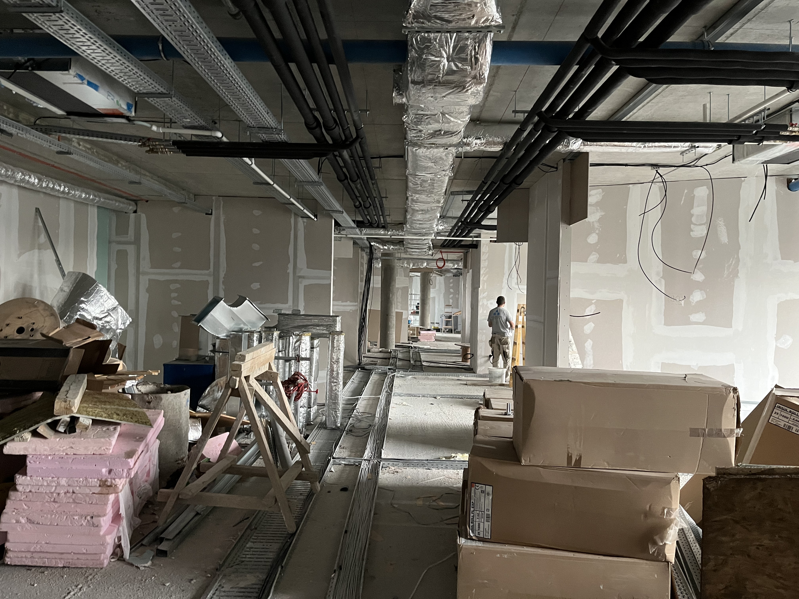

Ko smo mi
Faros Plus je profesionalna kompanija za završne građevinske radove sa sedištem u Beogradu. Specijalizovani smo za sisteme suve gradnje, montažu gipsanih ploča, zvučnu izolaciju, malterske radove, renovacije i molerske radove.
Osnovani na principima kvaliteta i preciznosti, delujemo na projektima širom Srbije — od velikih komercijalnih i industrijskih objekata do poslovnih interijera i stambenih uređenja.
Svaki projekat koji preuzmemo realizujemo uz temeljno planiranje, stručno izvođenje i fokus na rezultate koji ispunjavaju i prevazilaze očekivanja klijenata.

Šta radimo
Radimo u svim fazama unutrašnje gradnje — od sirove konstrukcije do gotovih površina. Naši timovi su iskusni u metalnoj konstrukciji, gipsano-kartonskim sistemima, mašinskom i ručnom malterisanju, akustičnoj i termičkoj izolaciji, spuštenim plafonima, moleraju i finalnim dekorativnim obradama.
Sarađujemo direktno sa arhitektima, generalnim izvođačima i vlasnicima projekata. Portfolio uključuje projekte poput Cineplexx bioskopa, Bosch Airport City, HTEC kancelarija i Beogradskog vodotornja.
Zašto nas biraju klijenti
Preciznost
Svaki zid, plafon i površina se meri, seče i obrađuje prema tačnim specifikacijama. Ne pravimo kompromise — delamo precizno.
Pouzdanost
Preuzimamo rokove i poštujemo ih. Klijenti nam veruju jer naša istorija govori sama za sebe.
Kvalitetni materijali
Radimo isključivo sa sertifikovanim, visokokvalitetnim građevinskim materijalima od proverenih proizvođača.
Iskusni timovi
Naši stručnjaci donose višegodišnje praktično iskustvo na komercijalnim, industrijskim i stambenim gradilištima u Srbiji.
Bezbednost na prvom mestu
Svi radovi se izvode u skladu sa bezbednosnim standardima i propisima gradilišta. Bez izuzetaka.
Jasna komunikacija
Obaveštavamo klijente u svakoj fazi — od pokretanja do konačne primopredaje — bez iznenađenja.